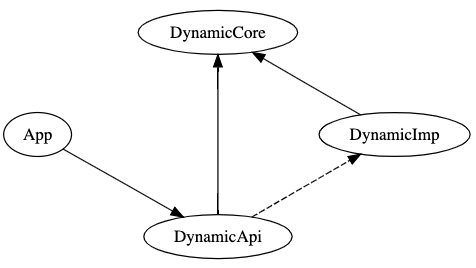

此次分享主要是关于动态库的动态加载应用。
絮絮叨叨
Xcode 开发从 iOS8 开始自带动态库的 Target 模板，受限于 iOS 签名机制，动态库技术并不能用于热更新，这个说法是针对正式版本的应用而言的，企业版应用是可以用动态库进行热更新操作。除开热更新，动态库还有其他应用场景：
App 与插件共享库文件
不同于静态库，App 引用动态库时，不会直接将库文件的二进制代码整合到 App 中，而是在运行时动态链接库文件，这个链接操作可以是自动或手动链接。利用这一特性，可以将 App 与插件公共的代码封装到动态库中，这样可以减少安装包可执行程序的体积。一般来说，这部分通用代码的体积通常不大，因此瘦身能力应该有限，当然具体项目具体分析。
动态加载/卸载模块
动态加载/卸载模块具有以下优势：
- 减小 App 大小
- 加快启动速度
- 降低运行内存
- 解决第三方库的兼容问题
动态加载有许多优势，但是通常我们是为了最后的第三方库兼容问题，才开始引入动态加载技术。
动态库
创建动态库
引用动态库
如果动态库和 App 在同一个工程中，Xcode 会为 App 自动添加三个配置：
- Targent Dependencies
- Link Binary With Libraries
- Embed Frameworks
其中 Embed Frameworks 将动态库拷贝到 App/Frameworks 目录下，并进行了签名操作
因此动态库不需要配置签名
如果动态库和 App 不在同一个工程中，先像引用静态库一样引入动态库，然后手动添加 Embed Frameworks 配置：
手动修改配置名称，修改目标路径为Frameworks，再将动态库拖动到这里即可，拷贝时是否签名，根据实际情况勾选，一般是需要签名的。
动态加载
Link Binary With Libraries 是链接库配置，可以选择从这里去除动态库的配置。经过测试，二者的区别是，如果保留配置，动态库会在程序启动时自动加载，无论程序是否用到动态库的方法。相反，去除配置后，如果程序未直接引用动态库的类，动态库不会被自动加载。需要注意，如果程序直接引用了动态库的类，即使该方法未被执行，动态库也会在启动时自动加载。因此要真正实现动态加载，首先要将动态库从 Link Binary With Libraries 移除，并且不能在代码中直接调用动态库的方法，需要借助运行时动态调用库中的方法。
+ (Model *)generateModel { |
卸载动态库
经测试，调用[NSBundle unload]并不能真正卸载动态库的代码，动态库代码仍然可以被访问。使用dlopen和dlclose可能可以实现卸载动态库，不过不建议使用，可能会影响审核。
进阶
动态加载引入的问题是程序不能直接调用动态库的方法，如果 App 调用动态库的场景不多，勉强也能接受，但是如果 App 需要多处调用动态库，又或者多个产品需要进行同样的操作，这样的机制就很影响开发效率和维护成本了。
程序员就是爱折腾，我们可以通过以下结构解决这个问题，该方案从根本上讲，就是面向接口编程的应用：

上图中 DynamicCore、DynamicImp、DynamicAPI 是三个库，其中 DynamicImp 必须是动态库，其他的两个可以是动态库也可以是静态库。
- DynamicCore 封装了动态库需要对外提供的方法协议和模型对象。
- DynamicImp 动态库是具体的业务逻辑，实现 DynamicCore 约定的协议方法。
- DynamicAPI 这一层是 App 的调用入口，实现 DynamicCore 约定的协议方法，可以利用 OC 消息转发技术，直接将消息转发给动态加载起来的 DynamicImp，降低 API 封装的维护成本。
- App 直接依赖 DynamicAPI，愉快的调用所需方法。
实际应用中，往往不必要使用 DynamicAPI 模块增加可复用性，此时 DynamicAPI 可以直接整合到 App 中。
有兴趣的读者可以看一下这个Demo/DFDemo。
ToDo
有时间再研究一下动态库和 CocoaPod 结合使用。